可用的楼梯类型
Available Stair Types
Cadimage 楼梯工具让你可以从三种主要的参数化楼梯类型中进行选择，并可加以修改以适应各种用途。
使用楼梯工具时，你可以在楼梯对话框中看到这三种构造类型（Solid（实体）、Floating（悬浮）和 Stringer（梯梁））：
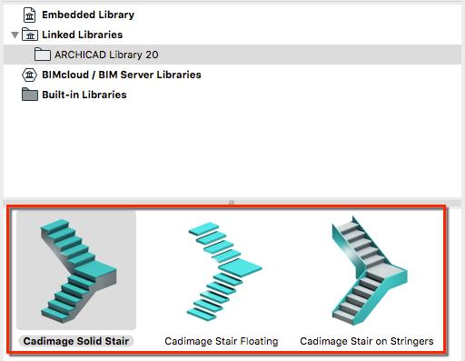
这三种楼梯类型可创建以下基本楼梯：
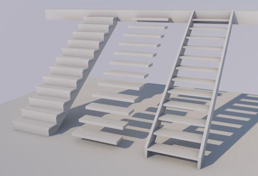
只需稍作调整，还可以实现其他多种楼梯变体：
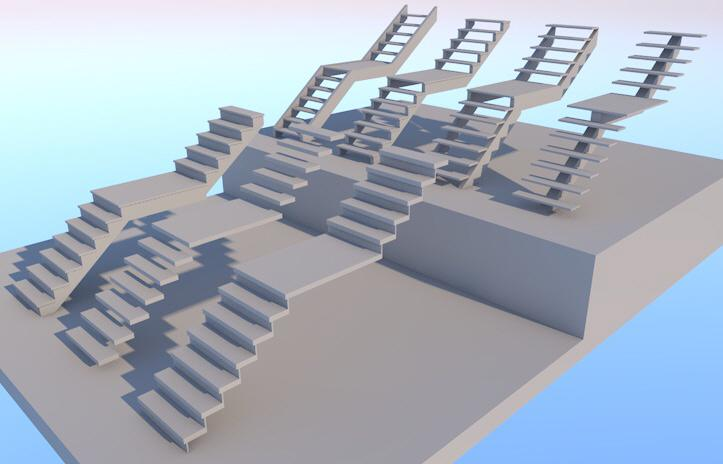
The Cadimage Stairs Tool lets you choose from three main parametric stair types that can be modified to suit a range of purposes.
When using the Stairs Tool you can see the three construction types (Solid, FloatingandStringer) within the Stairs Dialogue:
These three stair types create the following basic stairs:
And with a few tweaks, several other stair variations are possible:
英文原文对照Official English Original
The Cadimage Stairs Tool lets you choose from three main parametric stair types that can be modified to suit a range of purposes.
When using the Stairs Tool you can see the three construction types (Solid, FloatingandStringer) within the Stairs Dialogue:
These three stair types create the following basic stairs:
And with a few tweaks, several other stair variations are possible:
如何创建带休息平台的 L 形楼梯
How to create an L-shaped stair case with landing
下图所示的 L 形楼梯只需五个简单步骤即可创建：
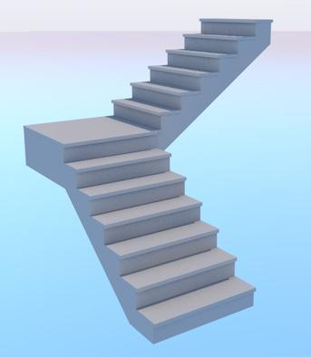
如何制作这个楼梯
- 从工具箱中选择 Polystair 图标。
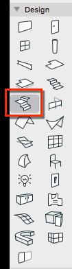
2.在平面图上单击以开始绘制楼梯。将鼠标向右移动，在 Tracker（跟踪器）中输入 Distance = 1800（距离 = 1800）和 Angle = 0°（角度 = 0°）。按回车键确认设置。
- 在宠物调色板中，将 Run type（梯段类型）改为 Landing（休息平台），然后将鼠标向右移动并输入 Distance = 1250 和 Angle = 0°。按回车键确认设置。
- 将鼠标向下移动，在 Tracker 中输入 Distance = 1250 和 Angle = -90° or 270°（-90° 或 270°）。按回车键确认设置。
- 在宠物调色板中，将 Run type 改为 Flight（梯段）。将鼠标向下移动，在 Tracker 中输入 Distance = 1800 和 Angle = -90° or 270°（-90° 或 270°）。按回车键确认 Tracker 中的设置。
- 在最后一个点上单击鼠标，完成几何图形。
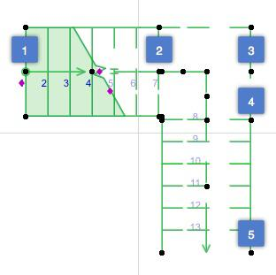
The L-shaped stair case shown below can be created in five easy steps:
How to make this stair
- Select the Polystair icon from the toolbox.
2.Click on your Plan to start drawing the stairs. Move the mouse to the right and in the Tracker, enter Distance = 1800 and Angle = 0°. Press enter to confirm the settings.
- In the Pet Palette, change the Run type to Landingand move the mouse to the right and enter Distance = 1250 and Angle = 0°. Press enter to confirm the settings.
- Move the mouse down and in the Tracker, enter Distance = 1250 and Angle = -90° or 270°. Press enter to confirm the settings.
- In the Pet Palette, change the Run type toFlight. Move the mouse down and enter Distance = 1800 and Angle = -90° or 270° in the Tracker. Press enter to confirm the settings in the Tracker.
- Click the mouse on the last point to complete the geometry.
英文原文对照Official English Original
The L-shaped stair case shown below can be created in five easy steps:
How to make this stair
- Select the Polystair icon from the toolbox.
2.Click on your Plan to start drawing the stairs. Move the mouse to the right and in the Tracker, enter Distance = 1800 and Angle = 0°. Press enter to confirm the settings.
- In the Pet Palette, change the Run type to Landingand move the mouse to the right and enter Distance = 1250 and Angle = 0°. Press enter to confirm the settings.
- Move the mouse down and in the Tracker, enter Distance = 1250 and Angle = -90° or 270°. Press enter to confirm the settings.
- In the Pet Palette, change the Run type toFlight. Move the mouse down and enter Distance = 1800 and Angle = -90° or 270° in the Tracker. Press enter to confirm the settings in the Tracker.
- Click the mouse on the last point to complete the geometry.
如何使用 Polystair 放置直行楼梯
How to place a straight stair using the Polystair
Cadimage 楼梯工具让你能直接在 ARCHICAD 平面图上绘制楼梯。这类楼梯称为 "Polystair"（多段线楼梯）。
- 在 ARCHICAD 工具箱中双击 Polystair 工具：

- 选择楼梯构造类型（本例中选择 Solid Stair（实体楼梯））：
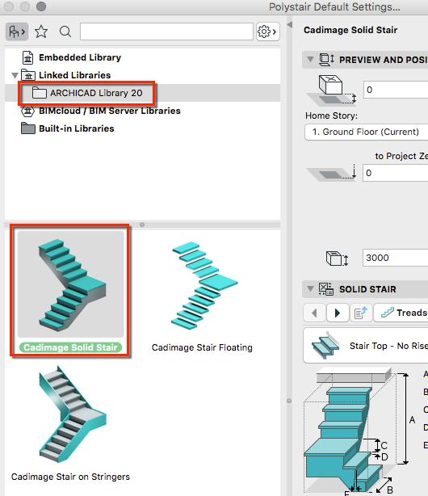
- 在 Preview and Positioning Panel（预览与定位面板）下可选择锚点：
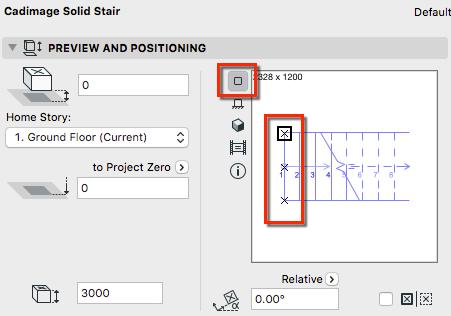
4.转到 Treads & Risers（踏步与踢面）设置 Total Rise, Width（总高、宽度）等。
*
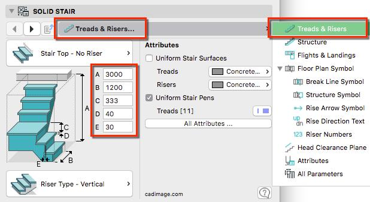
*
- 点击 OK 关闭对话框
8.在平面图上单击以开始绘制楼梯（见下图第 #1 项）
- 再次单击以设置楼梯的"端点"（见下图第 #2 项）：
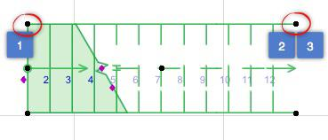
提示： 继续在平面图上单击即可为楼梯添加更多段（见上图第 #3 项）。
The Cadimage Stairs Tool lets you draw stairs directly onto your ARCHICAD plan. This type of stair is called a 'Polystair'.
- Double-click the Polystair Tool in the ARCHICAD Toolbox:
- Choose the stair construction type (for this exercise we will choose the Solid Stair):
- Under Preview and Positioning Panelyou can choose the anchor point:
4.**Go toTreads & Risersto set theTotal Rise, Width**etc.
*
*
- Click OK to close the dialogue
8.Click on your plan to start drawing your stairs (see item #1 in the image below)
- Click again to set the stair 'end-point' (see item #2 in the image below):
TIP: Continue clicking on your plan to add more sections to your stairs (see item #3 in the image above).
英文原文对照Official English Original
The Cadimage Stairs Tool lets you draw stairs directly onto your ARCHICAD plan. This type of stair is called a 'Polystair'.
- Double-click the Polystair Tool in the ARCHICAD Toolbox:
- Choose the stair construction type (for this exercise we will choose the Solid Stair):
- Under Preview and Positioning Panelyou can choose the anchor point:
4.**Go toTreads & Risersto set theTotal Rise, Width**etc.
*
*
- Click OK to close the dialogue
8.Click on your plan to start drawing your stairs (see item #1 in the image below)
- Click again to set the stair 'end-point' (see item #2 in the image below):
TIP: Continue clicking on your plan to add more sections to your stairs (see item #3 in the image above).
概述
Overview
Cadimage 楼梯工具为你提供了多种楼梯构造类型，可在住宅和商业设计中实现高度灵活的楼梯配置。
楼梯工具包含两个子工具：
- Polystair Tool（多段线楼梯工具）：允许你直接在平面图上绘制楼梯
- Railings Tool（栏杆工具）：允许你独立放置栏杆，或将其链接到楼梯结构。
该工具高度灵活，楼梯和栏杆可以混合采用不同的高度、宽度、直形或弧形梯段，并可包含斜踏步（winders）和／或休息平台（landing），全部使用常见的 ARCHICAD 输入方式。
The Cadimage Stairs Tool gives you access to a range of stair construction types that allow for highly flexible stair configurations for residential and commercial designs.
The Stairs Tool includes two sub-tools:
- The Polystair Tool: which allows you to draw stairs directly onto your plan
- The Railings Tool: which allows you to place railings independently or linked to a stair structure.
The highly flexible nature of the Tool allows for stairs and railings that can incorporate a mixture of heights, widths, straight or curved flights with winders and or landings using typical ARCHICAD input methods.
英文原文对照Official English Original
The Cadimage Stairs Tool gives you access to a range of stair construction types that allow for highly flexible stair configurations for residential and commercial designs.
The Stairs Tool includes two sub-tools:
- The Polystair Tool: which allows you to draw stairs directly onto your plan
- The Railings Tool: which allows you to place railings independently or linked to a stair structure.
The highly flexible nature of the Tool allows for stairs and railings that can incorporate a mixture of heights, widths, straight or curved flights with winders and or landings using typical ARCHICAD input methods.
ProKit Stair —— 从这里开始
ProKit Stair - Start here
ProKit Stair 让你能在 ARCHICAD 中快速简便地添加楼梯。
它可以放置带有易于编辑参数的楼梯，并自动为楼梯关联栏杆。
Libpack 加载（自 ARCHICAD 29 起）
请注意，ProKit ProKit Stair 工具需要将 ProKit Stair Libpack 手动加载到项目中。
与所有库一样，这一步通过库管理器（Library Manager）完成。请注意，所加载的 Libpack 需要在单个文件层级上选中，而不像早期 Archicad 版本那样在文件夹层级上选择。
库管理器可通过 File > Library Manager（文件 > 库管理器）下拉菜单访问。

进入库管理器后，我们将使用 "Add"（添加）按钮添加 ProKit Stair Libpack。

这样便可导航到位于 ARCHICAD 安装文件夹中的 ProKit Libpack 文件夹。
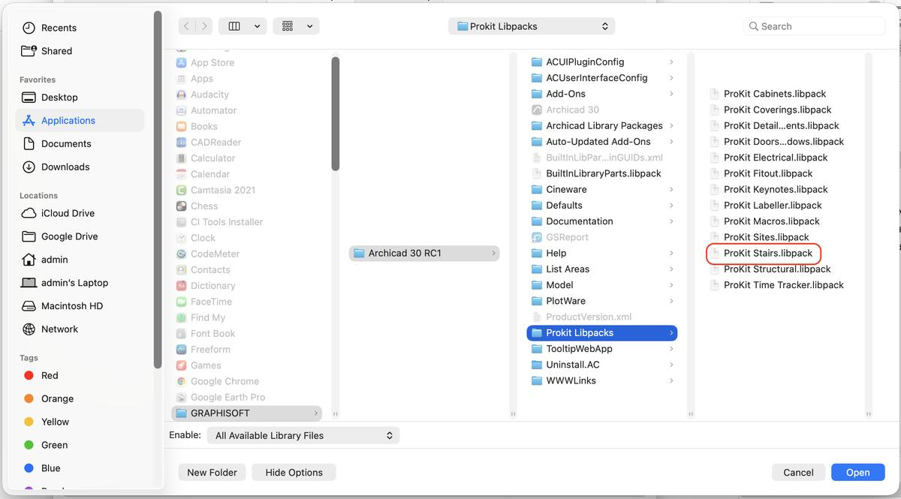
这将加载 ProKit Stair Libpack 及其关联的宏。
重要：
如果 ProKit 楼梯和栏杆工具没有出现在默认 ARCHICAD 工作环境左侧的工具箱中，可以通过在工具箱上单击右键来添加。工具箱会弹出对话框，可将 Polystair 和 Railing 工具添加进来。

这样便可以把楼梯工具添加到工具箱中。
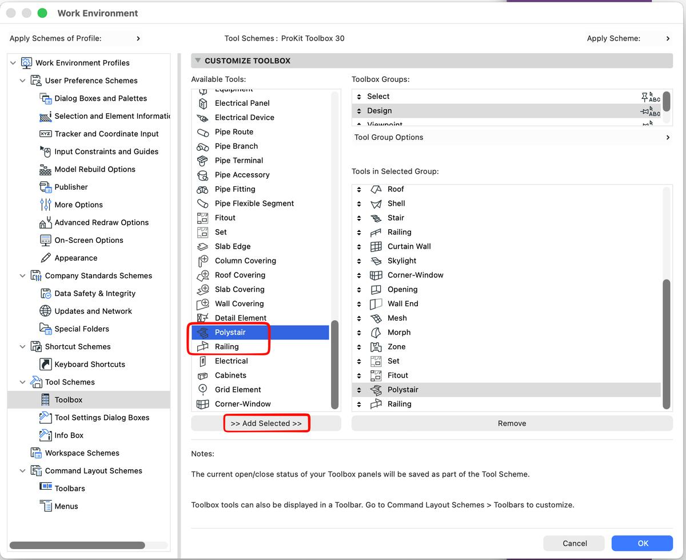
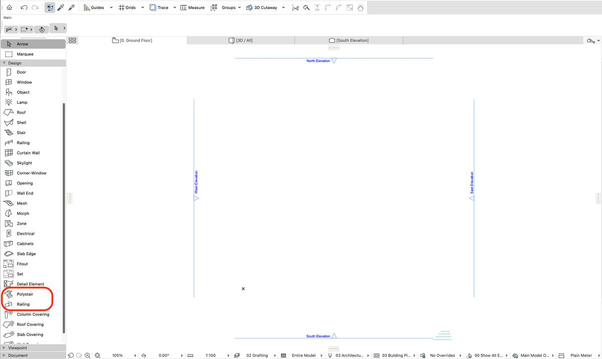
楼梯工具现在会出现在工具箱中。建议保存工作环境（Work Environment），以免在切换工作环境且不想丢失这些更改时不得不重新执行此过程。
添加楼梯
请注意，所有 ProKit Stair 都通过 Polystair 工具放置。
点击 ProKit Stair 后，会有三个楼梯对象可供选择。
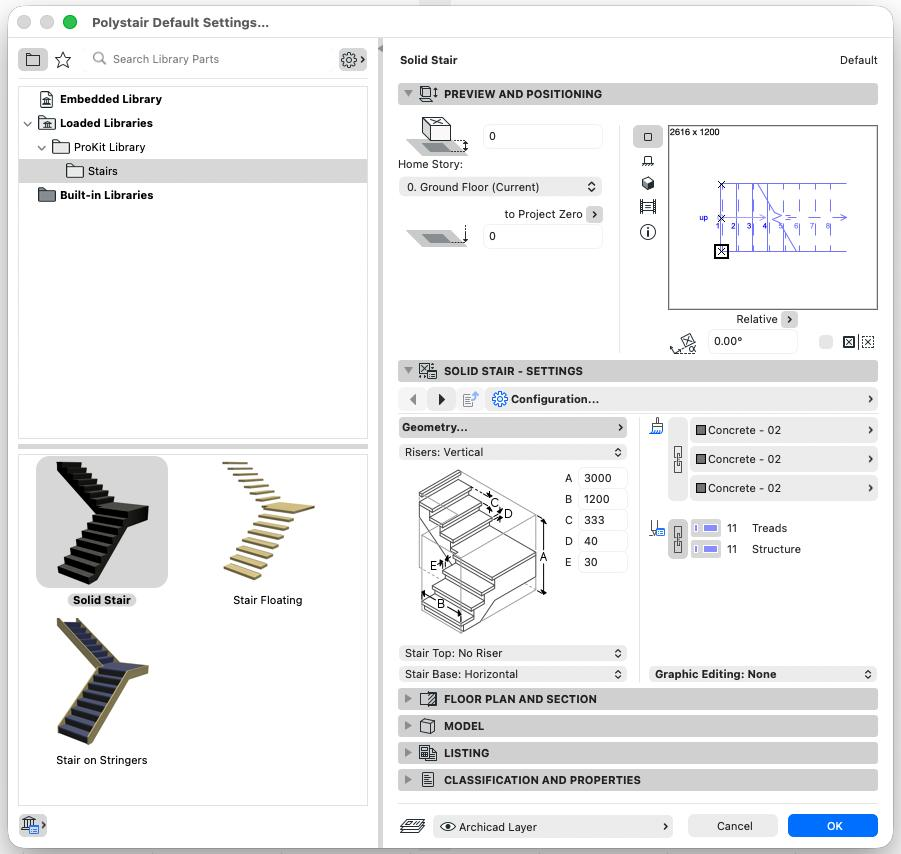
选定其中一个楼梯对象后，即可在平面图中绘制。
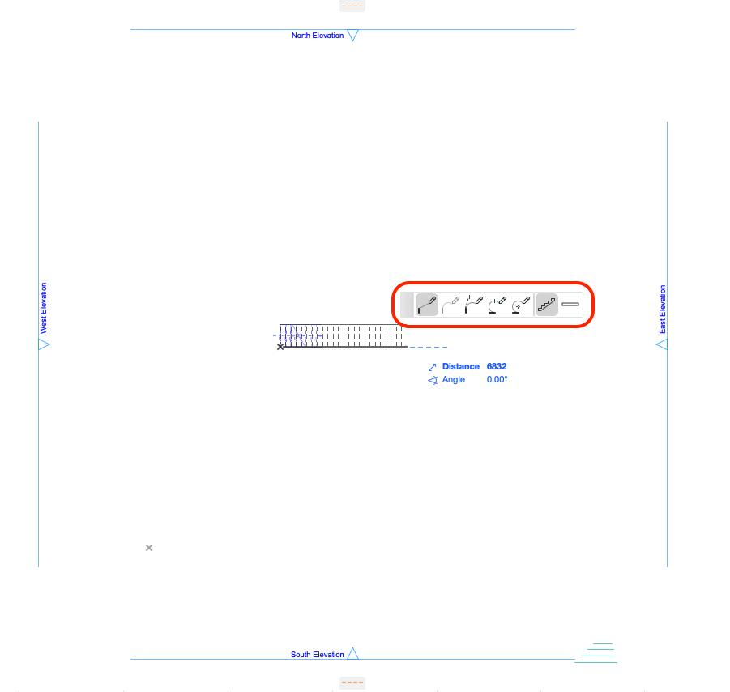
这与绘制折线非常相似，请注意那个宠物调色板（pet palette），它可用于转弯、休息平台（landing）以及其他绘制方式。
请注意，在最后放置的节点上再次双击，即可结束楼梯放置。
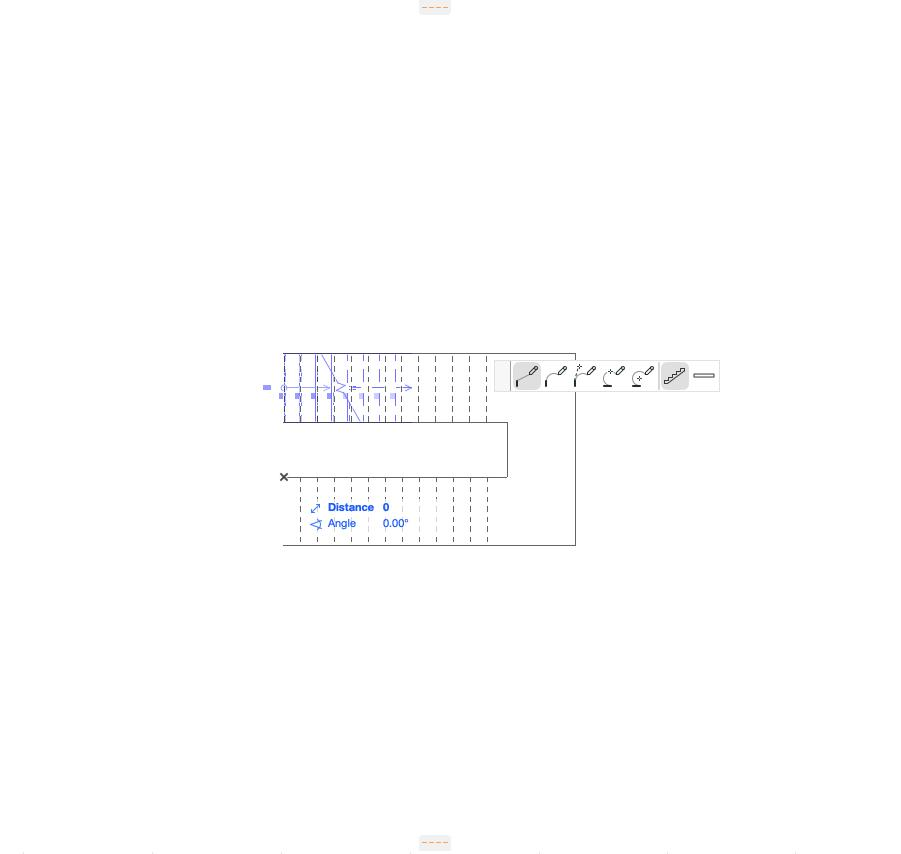
选中楼梯后即可放置关联式栏杆。请先选中楼梯。
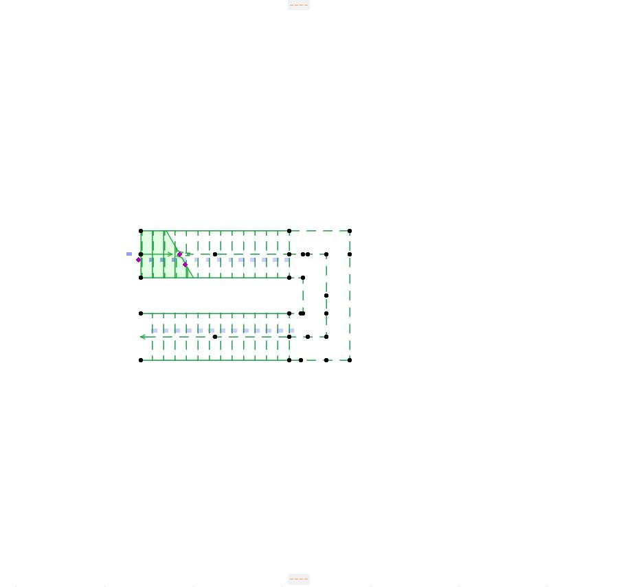
访问 ProKit > Stairs > Place Railings（放置栏杆）下拉菜单，即可调用 Polystair 栏杆工具。
完成选择后，栏杆将以关联方式放置到楼梯上。
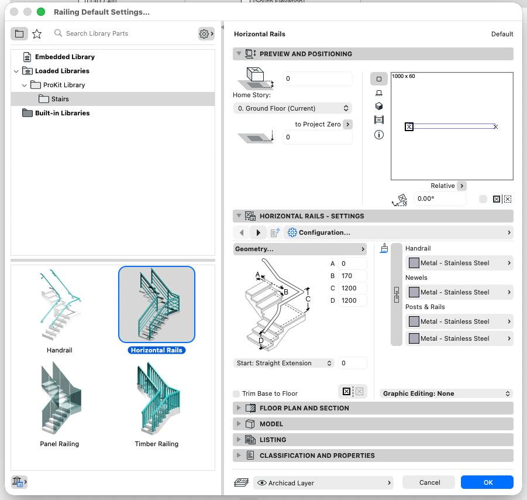
请注意，栏杆可根据光标位置放置在左侧、右侧或两侧。
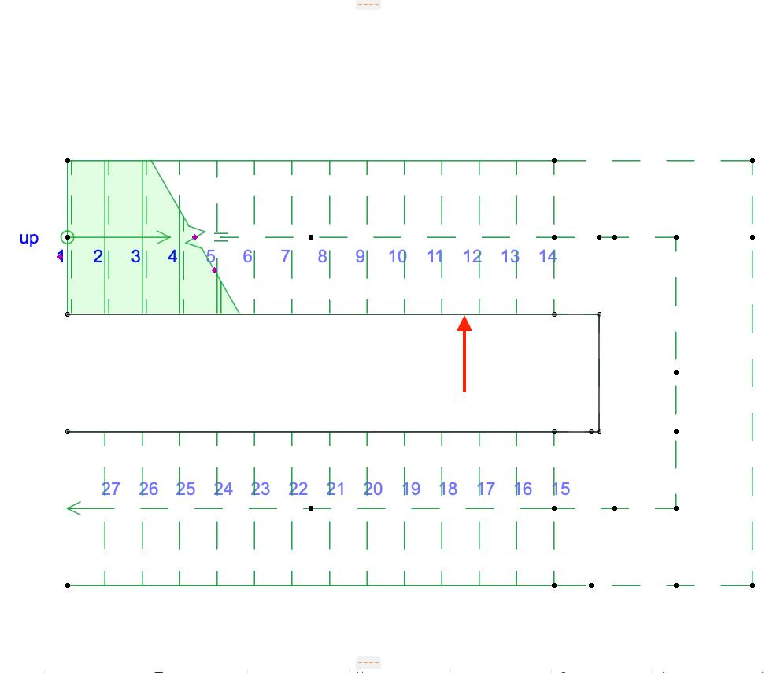
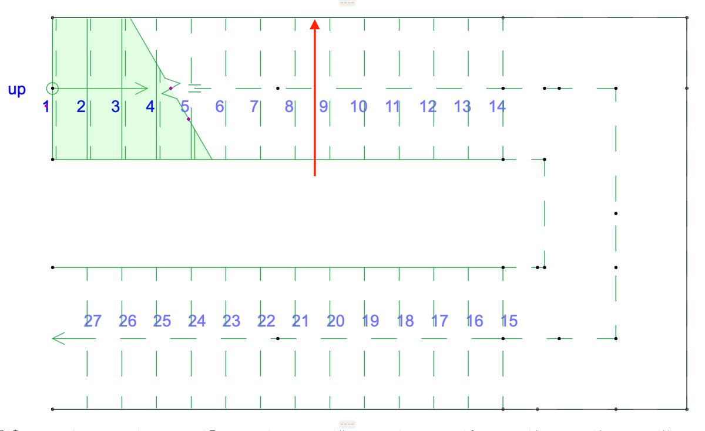
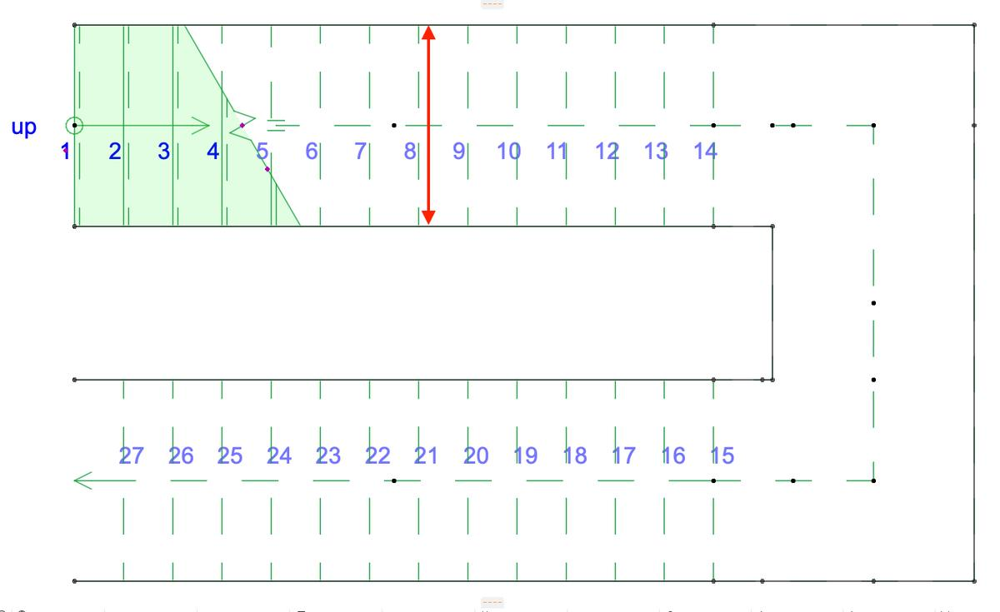
最终效果是带有关联栏杆的楼梯。
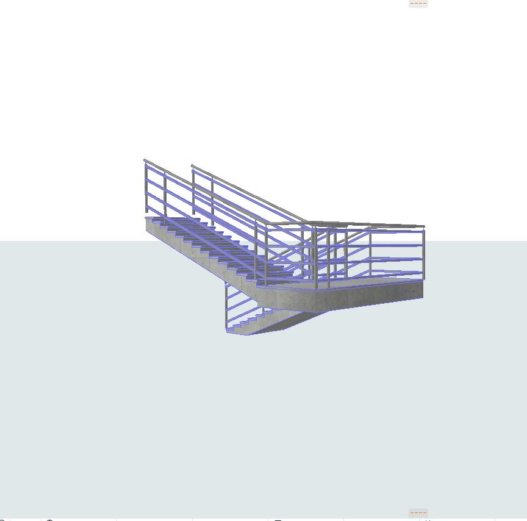
有关各个 ProKit Stair 工具的更多详细信息，请参阅知识库中的相关文章。
ProKit Stair allows you to add a stair quickly and easily in ARCHICAD.
It can apply a stair, with easily editable parameters, and also associate a railing automatically to the stair.
Libpack loading (since ARCHICAD 29)
It is important to note that the ProKit ProKit Stair Tool requires the ProKit Stair Libpack to be manually loaded into the project.
As with all Libraries this is done through the Library Manager. Please note that the Libpacks that are loaded need to be selected at an individual file and not at a folder level as was the case in earlier Archicad versions.
The Library Manager is accessed through the File>Library Manager dropdown.
Once in the Library Manager we will use the “Add” button to add the ProKit Stair Libpack.
This allows navigation to the ProKit Libpack folder located in the ARCHICAD installation folder.
This will load the ProKit Stair Libpack and associated Macros.
IMPORTANT:
If the ProKit stair and railing Tools are not showing in the toolbox on the left in the default ARCHICAD work environment, It can be added by right clicking on in the Toolbox. The Toolbox will bring up a dialog to add the Polystair and Railing Tools.
This will allow adding the Stair Tools to the Toolbox
The Stair Tools will now show up in the Toolbox, it is recommended to save the Work Environment to avoid having to redo this process if you switch work environments and don't want to lose your changes
Adding a Stair
Please note that all ProKit Stair are placed with the Polystair Tool.
By clicking on the ProKit Stair we have a selection of three stair objects to choose from.
Once we have selected one of the stair Objects, it can be drawn in plan view.
This is very similar to drawing a polyline, note the pet palette that allows for turns, landings and other drawing methods.
Note that double clicking again on the last node placed, ends the stair placement.
With the stair selected an associative railing can be placed. Select the stair.
Access the ProKit>Stairs>Place Railings dropdown. This will access the Polystair railing Tool.
After a Selection is made the railing will be placed associative to the stair.
Please note that the railing can be placed to the left, right or on both sides depending on cursor position.
The result is a stair with associated railing.
For more detailed information on each ProKit Stair Tool please see the articles on the Knowledge-base.
英文原文对照Official English Original
ProKit Stair allows you to add a stair quickly and easily in ARCHICAD.
It can apply a stair, with easily editable parameters, and also associate a railing automatically to the stair.
Libpack loading (since ARCHICAD 29)
It is important to note that the ProKit ProKit Stair Tool requires the ProKit Stair Libpack to be manually loaded into the project.
As with all Libraries this is done through the Library Manager. Please note that the Libpacks that are loaded need to be selected at an individual file and not at a folder level as was the case in earlier Archicad versions.
The Library Manager is accessed through the File>Library Manager dropdown.
Once in the Library Manager we will use the “Add” button to add the ProKit Stair Libpack.
This allows navigation to the ProKit Libpack folder located in the ARCHICAD installation folder.
This will load the ProKit Stair Libpack and associated Macros.
IMPORTANT:
If the ProKit stair and railing Tools are not showing in the toolbox on the left in the default ARCHICAD work environment, It can be added by right clicking on in the Toolbox. The Toolbox will bring up a dialog to add the Polystair and Railing Tools.
This will allow adding the Stair Tools to the Toolbox
The Stair Tools will now show up in the Toolbox, it is recommended to save the Work Environment to avoid having to redo this process if you switch work environments and don't want to lose your changes
Adding a Stair
Please note that all ProKit Stair are placed with the Polystair Tool.
By clicking on the ProKit Stair we have a selection of three stair objects to choose from.
Once we have selected one of the stair Objects, it can be drawn in plan view.
This is very similar to drawing a polyline, note the pet palette that allows for turns, landings and other drawing methods.
Note that double clicking again on the last node placed, ends the stair placement.
With the stair selected an associative railing can be placed. Select the stair.
Access the ProKit>Stairs>Place Railings dropdown. This will access the Polystair railing Tool.
After a Selection is made the railing will be placed associative to the stair.
Please note that the railing can be placed to the left, right or on both sides depending on cursor position.
The result is a stair with associated railing.
For more detailed information on each ProKit Stair Tool please see the articles on the Knowledge-base.
使用 Polystair —— 高级形状
Using the Polystair - advanced shapes
借助楼梯工具的 Polystair 功能，你可以创建包含直梯段与弧形梯段、定制度极高的楼梯设计。
要使用 Polystair 功能，请确保先完成楼梯设置（若不确定，可参阅文章 Place a basic Stair using the Polystair），然后：
- 在平面图视图上单击，开始绘制楼梯：
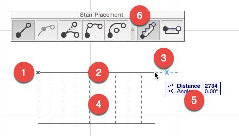
提示： 稍作停顿，看看有哪些可用选项。在上图你可以看到 Polystair Origin（多段线起点）（项 #1）；Polystair Reference Line（多段线参考线）（项 #2）；光标位置（项 #3）；Flight Preview（梯段预览）（项 #4）；Tracker（跟踪器）（项 #5）；以及 Stair Placement 'Pet Palette'（楼梯放置宠物调色板）（项 #6）。
- 在宠物调色板中选择该段楼梯的几何形状（你需要选择一项 Leg Geometry（梯段几何）选项和一项 Run Type（梯段类型）选项）：
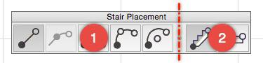
区域 1（上方）显示 Leg Geometry（梯段几何）选项
- Straight Edge（直边）
- Curved edge starting at a tangent to the previous edge (not possible to start with this)（与前一段相切起始的弧形边，无法以此作为起始）
- Curved edge starting at a tangent to a defined vector（与指定向量相切起始的弧形边）
- Curved edge by three points（三点弧形边）
- Curved edge by centre point（按圆心弧形边）
区域 2 显示 Run Type（梯段类型）： Flight（梯段）或 Landing（休息平台）
- 选择 Leg Geometry（即直形或弧形）后，再次在平面图上单击进行放置
- 返回宠物调色板，选择另一个梯段几何或梯段类型
- 再次在平面图上单击，放置下一个梯段或休息平台。
提示： 如果出现错误，可以按 Backspace（退格键）撤销上一步：
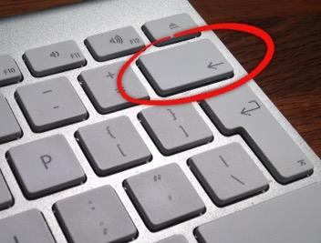
如果想取消该设计，请按 Esc 键：
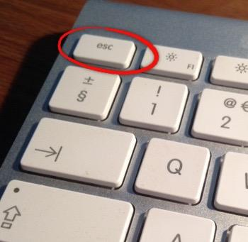
按需继续添加梯段和休息平台。
Using the Polystair functionality of the Stairs Tool, you can create highly custom stair designs that feature straight and curved stair shapes.
To use the Polystair functionality, make sure you set up your Stair Settings first (refer to the article Place a basic Stair using the Polystair if you are unsure), then:
- Click on your plan view to start drawing your stairs:
TIP: Take a moment to view the options available to you. In the image above you can see the Polystair Origin (item #1); Polystair Reference Line (item #2); cursor position (item #3); Flight Preview (item #4); Tracker (item #5); and the Stair Placement 'Pet Palette' (item #6).
- Choose the geometry of this leg of your stairs from the Pet Palette (you'll need to choose a Leg Geometry option and Run Type option):
Zone 1 (above) shows Leg Geometry options
- Straight Edge
- Curved edge starting at a tangent to the previous edge (not possible to start with this)
- Curved edge starting at a tangent to a defined vector
- Curved edge by three points
- Curved edge by centre point
Zone 2 shows Run Type:Flight or Landing
- After selecting your Leg Geometry (ie straight or curved), click again on the plan to place it
- Return to the Pet Palette to choose another Leg or Run Type
- Click on your plan again to place the next Flight or Landing.
TIP: If you make a mistake you can press Backspace to undo the last step:
If you want to cancel the design, press your Esc key:
Continue adding Flights and Landings as desired.
英文原文对照Official English Original
Using the Polystair functionality of the Stairs Tool, you can create highly custom stair designs that feature straight and curved stair shapes.
To use the Polystair functionality, make sure you set up your Stair Settings first (refer to the article Place a basic Stair using the Polystair if you are unsure), then:
- Click on your plan view to start drawing your stairs:
TIP: Take a moment to view the options available to you. In the image above you can see the Polystair Origin (item #1); Polystair Reference Line (item #2); cursor position (item #3); Flight Preview (item #4); Tracker (item #5); and the Stair Placement 'Pet Palette' (item #6).
- Choose the geometry of this leg of your stairs from the Pet Palette (you'll need to choose a Leg Geometry option and Run Type option):
Zone 1 (above) shows Leg Geometry options
- Straight Edge
- Curved edge starting at a tangent to the previous edge (not possible to start with this)
- Curved edge starting at a tangent to a defined vector
- Curved edge by three points
- Curved edge by centre point
Zone 2 shows Run Type:Flight or Landing
- After selecting your Leg Geometry (ie straight or curved), click again on the plan to place it
- Return to the Pet Palette to choose another Leg or Run Type
- Click on your plan again to place the next Flight or Landing.
TIP: If you make a mistake you can press Backspace to undo the last step:
If you want to cancel the design, press your Esc key:
Continue adding Flights and Landings as desired.
观看：使用对话框创建栏杆
Watch: Create railings using the dialogue
在 ARCHICAD 19 中演示
Demonstrated in ARCHICAD 19
英文原文对照Official English Original
Demonstrated in ARCHICAD 19
观看：直接在 ARCHICAD 平面图上绘制楼梯
Watch: Draw Stairs directly onto your ARCHICAD plan
在 ARCHICAD 19 中演示
Demonstrated in ARCHICAD 19
英文原文对照Official English Original
Demonstrated in ARCHICAD 19
观看：按空间绘制楼梯
Watch: Draw Stairs to fit a space
在 ARCHICAD 19 中演示
Demonstrated in ARCHICAD 19
英文原文对照Official English Original
Demonstrated in ARCHICAD 19
观看：6 分钟快速上手！
Watch: Get started in 6 minutes!
在这段视频中，Ralph 概述了楼梯工具：
In this video Ralph provides an overview of the Stairs Tool:
英文原文对照Official English Original
In this video Ralph provides an overview of the Stairs Tool:
观看：以图形方式添加和修改栏杆
Watch: Graphically add and modify railings
栏杆可以放置在楼梯上，也可以独立放置，用于休息平台、阳台、坡道等多种场合。在这段简短视频中，我们展示如何为你的 Cadimage 楼梯创建栏杆：
在 ARCHICAD 19 中演示
Railingscan be placed on stairs, or independently for use on landings, balconies, ramps and more. In this short video we show you how to create railings for your Cadimage Stairs:
Demonstrated in ARCHICAD 19
英文原文对照Official English Original
Railingscan be placed on stairs, or independently for use on landings, balconies, ramps and more. In this short video we show you how to create railings for your Cadimage Stairs:
Demonstrated in ARCHICAD 19
观看：以图形方式编辑现有楼梯
Watch: Graphically edit existing stairs
在 ARCHICAD 19 中演示
Demonstrated in ARCHICAD 19
英文原文对照Official English Original
Demonstrated in ARCHICAD 19
观看：概览网络研讨会（21 分钟）
Watch: Overview webinar (21 mins)
在这段视频中，Ken 介绍了楼梯工具。这是一个很好的起点，可了解在大多数基本场景下如何使用该工具。
在 ARCHICAD 19 中演示
In this video, Ken provides an introduction to the Stairs Tool. This is a great starting place to learn how to use the tool in most basic situations.
Demonstrated in ARCHICAD 19
英文原文对照Official English Original
In this video, Ken provides an introduction to the Stairs Tool. This is a great starting place to learn how to use the tool in most basic situations.
Demonstrated in ARCHICAD 19